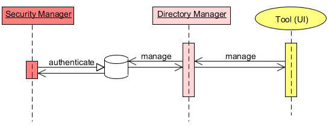

|
Section Summary: User and Role directory API OverviewThe directory provides the means for managing users and roles. User and role information stored in a persistent storage need to be accessed for authentication purposes and for management (adding/modifying,associating, etc.).  The SecurityManager access the directory for authenticating the user. The authentication process retrieves the user credentials and permissions. On the other hand, you need some tool to access the directory for managing the users/roles. It can be as simple as SQL statements modifying records in a database. Our default file-based security implementation uses a local file. Using the UI with the default security, you can add, modify, associate, remove users and roles which are saved to this local file. The UI calls upon the DirectoryManager implementation to perform these actions. In general, if you are using the UI and the default file-based security than you probably don't need this API. If you need a command line tool to manage the users/roles you will probably need to write code either calling the default DirectoryManager implementation or write a custom implementation all together. Accessing the directoryThe directory has clear distinction between user management and role management. For each there is an associated authority that can be granted to a user. For example, you may grant a user an authority to manage users but at the same time deny role management. The default user which can access the default file-based security implementation is admin/admin. Note that this is specific to the implementation. You can remove admin after first log-in to the directory, but make sure to declare a new user with MANAGE_USERS and/or MANAGE_ROLES authorities. User ManagementThe DirectoryManager interface provides a means to managing users using the UserManager API. Access should be granted only to users with MANAGE_USERS authority. The UserManager interface has simple methods for declaring users: public interface UserManager { ... void createUser(UserDetails) UserDetails getUser(String) void deleteUser(String) void updateUser(UserDetails) ... } Role ManagementThe DirectoryManager interface provides a means to managing roles using the RoleManager API. Access should be granted only to users with MANAGE_ROLES authority. The RoleManager interface has simple methods for declaring roles: public interface RoleManager { ... createRole(RoleDetails) RoleDetails getRole(String) deleteRole(String) updateRole(RoleDetails) ... } Using the APIThe directory manager is accessible via the SecurityManager. In our default implementation, the user admin/admin has both MANAGE_USERS and MANAGE_ROLES. We will use this user to gain access to the directory manager. Also, we have two default implementations User and Role implementing UserDetails and RoleDetails respectively. Properties securityProperties = new Properties(); SecurityManager securityManager = SecurityFactory.createSecurityManager(securityProperties); DirectoryManager directoryManager = securityManager.createDirectoryManager(new User("admin", "admin")); We can now add a new user using the UserManager API. "Alice" will be added with READ authority for class "eg.ClassA". UserManager userManager = directoryManager.getUserManager(); userManager.createUser(new User("alice", "password", new SpaceAuthority(SpacePrivilege.READ, new ClassFilter("eg.ClassA")) )); A role can be declared using the RoleManager API. The "author" role will be added with READ, WRITE, TAKE authorities for class "eg.ClassA". RoleManager roleManager = directoryManager.getRoleManager(); roleManager.createRole(new Role("author", "password", new SpaceAuthority(SpacePrivilege.READ, new ClassFilter("eg.ClassA")), new SpaceAuthority(SpacePrivilege.WRITE, new ClassFilter("eg.ClassA")), new SpaceAuthority(SpacePrivilege.TAKE, new ClassFilter("eg.ClassA")) )); We can assign this role to user "bob". userManager.createUser(new User("bob", "password", new RoleAuthority("author") )); The ClassFilter is one of the restrictive filters available. There is also a RegexFilter, PackageFilter, etc. A handy utility is the wildcard expression converter which converts a string expression to a filter. This is used by the UI dialog when creating filters. userManager.createUser(new User("carol", "password", new SpaceAuthority(SpacePrivilege.READ, WildcardExpressionToFilterConverter.convert( "eg.Class*", true)) )); |
| GigaSpaces.com - Legal Notice - 3rd Party Licenses - Site Map - API Docs - Forum - Downloads - Blog - White Papers - Contact Tech Writing - Gen. by Atlassian Confluence |